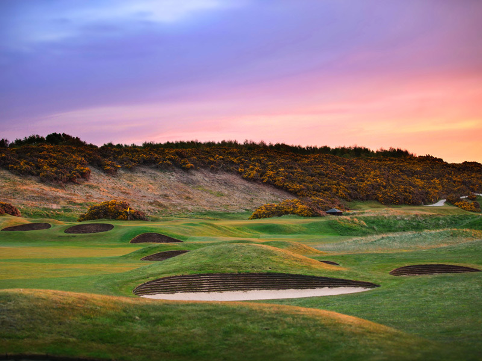

Par 70, yardage 6,682. Formed as a Club in 1877 with the course laid out in 1886 by Old Tom Morris, Royal Dornoch is considered one of the finest links courses in the world. The course is spellbinding and golfers from all over the world make the trip to the incredibly scenic Scottish Highlands to play the course annually featured top-ten course in the world by Golf Digest. The natural setting for Royal Dornoch among the high dunes and ridges that line the white sandy beaches of Dornoch Firth, provides the setting often referred to as wild and isolated. The dune land rises in two distinctive levels, providing narrow strips of land providing just enough room for parallel fairways. Holes 1-8 follow the upper ridge "out" and holes 9-18 play in opposite direction "in" and are bounded, (except holes 17 and 18), on the left by the sand beaches of the Firth.
Royal Dornock is not a long course compared to modern layouts but the plateau greens originally created by Old Tom Morris and the soul of the course, plus wind will demand steady play by all golfers. Royal Dornoch is a favorite of former Open Champion Tom Watson who said: "It was the most fun I've had playing golf in my whole life".
Steeped in Scottish history, the 15th century Dornoch Castle Hotel firmly stands its ground opposite the inspiring 12th century Dornoch Cathedral and surrounded by the Highlands finest links courses. Set in beautifully manicured gardens, this Scottish Castle still bears an air of magnificence and grace. All 24 Dornoch Castle ensuite bedrooms are tastefully decorated with a strong emphasis on comfort and tranquility but still having that Baronial home atmosphere. After a day on the links, guests can enjoy finely prepared meals in one of the Hotel's fine venues - The Vault or Dornoch Castle Restaurant where locally sourced items highlight all that Scottish cuisine has to offer. Don't miss the top-rated Dornoch Whiskey Bar and one of the finest collection of Scotch whiskies in the Highlands, plus a must tour and tasting at the onsite Dornoch Distillery. This popular micro-distillery located at the old "Fire House" in the Castle's garden, was built in 1881 and creates some of the best handcrafted whiskey in Scotland.
Suggested hotel: Dornoch Castle Hotel